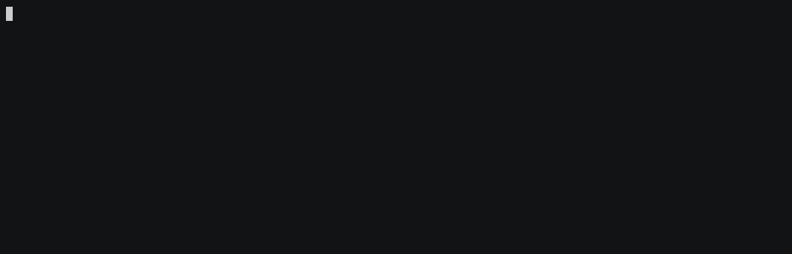
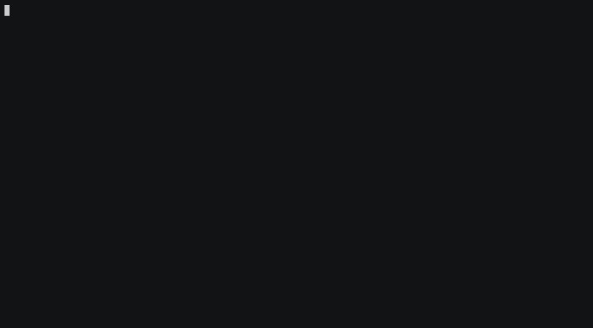
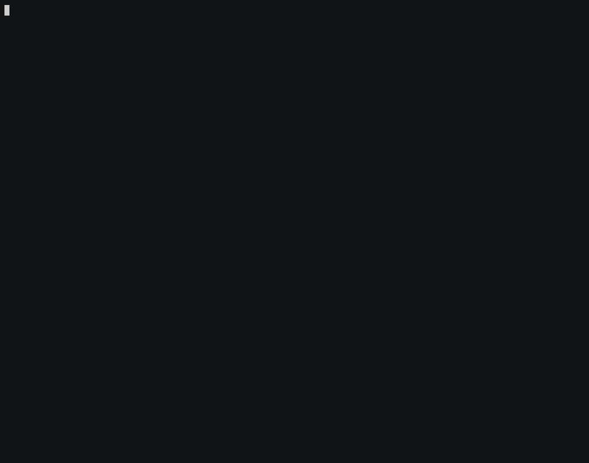
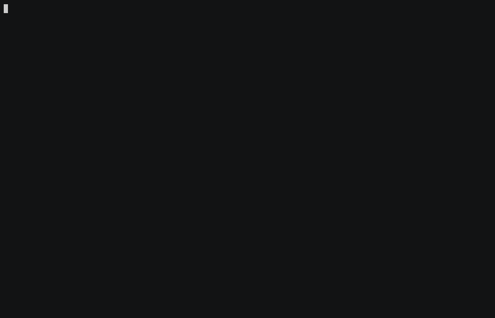
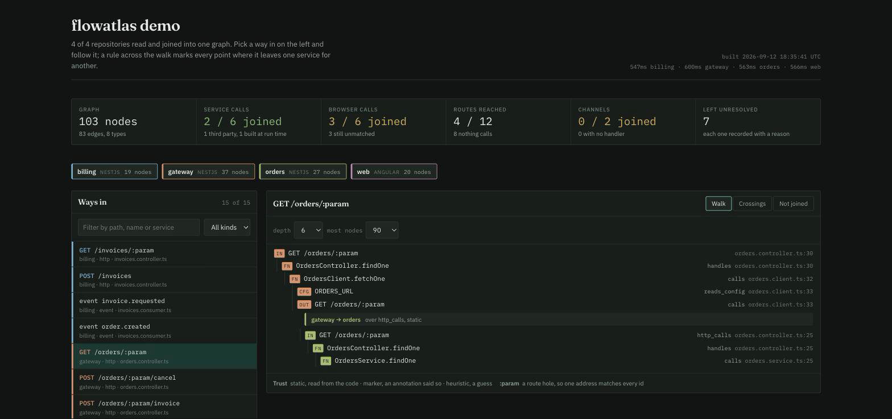

flowatlas · a walkthrough in ten steps
A command-line tool that reads several TypeScript repositories with the compiler's own checker, without running them, and joins them into one graph you can query — from a terminal or from a coding agent. It knows NestJS and Angular, Express, Fastify and Koa, Telegraf and Hono, TypeORM, Prisma, Drizzle, Mongoose, Sequelize, Knex, Mongo, Redis, Kafka, RabbitMQ and socket.io.
A request made in one service is matched to the route that
answers it in another, a message published in one to whatever handles it, a
button in a browser to the endpoint it calls. madge,
dependency-cruiser and nx graph draw the imports
inside one repository, which is what a compiler already sees. This joins the
repositories. If your project is one repository, you do not need it.
npm install -g @flowatlas/cli
flowatlas init --dir . # find the repositories under here
flowatlas build # read them all and join themmeasured on a real project
Five repositories that ship as one product: three NestJS services and two Angular frontends, with a shared package of types between them. Read in full, from cold, in about five seconds. It is the project this was built against — reproducible, and from one codebase whose author also wrote the tool.
The third figure is the one that matters. Five hundred
and forty one connections that no compiler in any of those five checkouts
can see, because each one only ever reads its own. 19,403 of the edges were
read from the code, 397 were inferred and marked heuristic, and
17 were declared by an annotation. Every edge says which of the three it is.
| HTTP routes | 564 |
| bot commands, callbacks and events | 64 |
| routes something in the project reaches | 507 |
| routes nothing it can see calls | 57, of which 38 unexplained |
| browser requests matched to their route | 493 → 493 / 499 |
| calls between services matched | 1 → 41 / 61 |
| routes something reaches | 481 → 507 |
| message channels with a handler | 0 → 7 / 17 |
| contract errors, over 636 boundaries | 1 |
| names declared more than one way | 64 |
| channels handled nowhere | 10 |
| findings to act on | 22 |
| places static reading cannot reach | 291 |
| rows they are folded into | 12 |
| edges inferred, and marked so | 397 |
| places where nothing joins, counted apart | 397 |
The first column is what a first build gives you. The two
settings behind the second say which settings key addresses a service and
where a frontend's key points: a string in one repository and a route in
another are joined by a fact only the person who deployed them knows, and
flowatlas doctor names both with the line that wants them.
Nothing in that last table is dropped or rounded away.
Each row carries a file, a line, a reason and the one thing to change.
flowatlas stats prints these figures for your own project, and
flowatlas doctor prints the list behind them.
The rest of this page is a walkthrough, recorded against
fixtures/multi-repo
rather than the project above: four services that do not share a
repository, small enough to read in a sitting, and already carrying the
same kinds of problem. A scene is a shell script, so what is on screen is
what actually ran.
Put yourself in a directory with the repositories under it, or beside them,
and run init. It reads each manifest, works out the name and the
kind, and writes flowatlas.config.json. It also registers the
graph server in every repository, so an agent working in any one of them can
ask about all of them.
npm install -g @flowatlas/cli
flowatlas init # find the repositories and ask
flowatlas init --dir . # look under this one, not beside itflowatlas init with no --dir scans the
parent directory, which is what you want when the configuration
lives inside one of the repositories, and not what you want when it lives
above them.
build reads every repository in its own process and joins the
readings. A first build is rarely all green, and it is not supposed to
be.
Four requests leave the gateway for an address flowatlas cannot attribute to any service, and only one of six browser requests found its route. Nothing was guessed; all of it was recorded, with a file and a line.
doctor turns those counts into a list of things to do. Every
row names the reason, the file, the line, the call, and what to change.

All four rows here say the same thing: a request is rooted at a settings key, and no service in the configuration claims that key.
flowatlas doctor --section unresolved # what could not be read
flowatlas doctor --section desync # calls matching no route
flowatlas doctor --section markers # annotations gone stale
flowatlas doctor --strict # exit 1 on a problemTwo settings close four of the fifteen findings, and three of the five browser requests that had nowhere to go.
baseUrlEnv is what turns a request into an edge: a service declares the settings keys other services use to address it. Without it, a request is recorded and joined to nothing. apiTarget does the same for a browser, saying which service a frontend's settings key points at.

| first build | after two settings | |
|---|---|---|
| calls between services linked | 1 | 2 |
| browser requests joined to a route | 1 | 3 |
| routes something reaches | 2 | 4 |
| rows left unread | 15 | 11 |
What survives is no longer missing configuration. It is the project disagreeing with itself, which is the thing worth knowing.
flow takes any way in and follows it until it stops.
The first trace starts at a (click) in an Angular template
and ends at a row in a table in a different repository, crossing two
service boundaries on the way, with unresolved on this path: 0
to say nothing along it was guessed.
The second shows the other case. BillingClient builds its
address at run time from a registry, so nothing can be read from the
source; an annotation on the method declares where it goes, and the edge
is recorded with confidence: marker rather than
static, so it is always clear which edges were told rather
than found.
An entry can be named however you would say it aloud. These three are the same route:
flowatlas flow "POST /orders/12345"
flowatlas flow "POST /orders/:param"
flowatlas flow "entry:orders:http:POST:/orders/:param"impact starts at a symbol and walks backwards to every way in
that reaches it. Give it a table and it tells you which routes would have
to be retested.

hotspots ranks what the most things point at, and
channel shows both ends of a message channel — here, one with
a handler and no publisher anywhere in the project.
Two services agree about a shape until one of them changes.
contracts compares what each side of every crossing declares,
field by field.

The frontend declares an OrderDto with four required fields,
and the gateway answers that route with none of them: it sends a wrapper
whose only field is data, of an unreadable shape. Nobody wrote
that down anywhere and no test covers it, because the two sides live in
different repositories.
The unchecked list matters as much as the findings. It says
which boundaries could not be compared and what to do about each, rather
than reporting them as agreement.
dead is the one to read carefully. It says so itself: nothing
in it is proof, every row is a heuristic with the reason it fired
attached.
visualise writes one self-contained page: no server, nothing
to fetch, nothing to install. It opens on the reconciliation, lists every
way in, and follows any one of them across service boundaries, marking
each crossing with what it was joined by and how much to trust it.

It is a report you can click, not a viewer you keep running. Attach it to a review, or keep it beside a decision.
diff builds the graph at two revisions and reports what moved
between them.
One route is renamed in the orders service. flowatlas names the gateway
route that called it and the browser button above that, in two
repositories the change does not touch. The output is markdown because its
destination is a pull request comment;
--fail-on-contract-break makes it a build failure instead.
init already registered the server in each repository. An
agent in any one of them gets the whole project over the Model Context
Protocol.
Ten tools, and only one of them returns source code. A trace never drags in the body of every method along it; the agent asks the graph which name to look at, then asks for that one name.
flowatlas mcp --install # register everywhere, merging
flowatlas mcp --install --dry-runAfter that, claude mcp list shows flowatlas.
docs/mcp.md is the whole thing: setup
for Claude Code, Cursor, VS Code and Claude Desktop, what each tool takes,
the order to call them in, and what to check when a client will not list
the server.